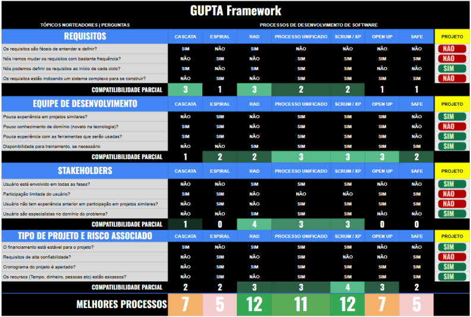

Estratégias de Engenharia de Software
3.1 Estratégia Priorizada
Abordagem de Desenvolvimento de Software: Híbrido
Ciclo de Vida: Adaptativo
Processo de Engenharia de Software: RAD
3.2 Quadro Comparativo
| Características | RAD | Scrum XP |
|---|---|---|
| Abordagem Geral | Iterativo e incremental, com ciclos curtos de desenvolvimento e prototipagem rápida. | Iterativo e incremental com foco em entregas rápidas e feedback contínuo. |
| Foco em Arquitetura | Inicialmente superficial, priorizando funcionalidade; arquitetura é ajustada com base no feedback. | Menor foco na arquitetura inicialmente, com evolução da arquitetura ao longo do tempo e conforme a necessidade. |
| Estrutura de Processos | Baseada em protótipos rápidos, feedback frequente e fases curtas de desenvolvimento. | Focado em sprints curtos e flexíveis (2-4 semanas) com entregas incrementais e adaptação contínua durante o projeto. |
| Flexibilidade de Requisitos | Alta, com capacidade de acomodar mudanças rapidamente durante o ciclo de desenvolvimento. | Alta flexibilidade para mudanças contínuas de requisitos a cada sprint. Adaptável a feedback frequente do cliente. |
| Colaboração com Cliente | Contato frequente com o cliente para obter feedback e ajustar os protótipos. | Envolvimento constante do cliente, com feedback ao final de cada sprint, garantindo que os requisitos estejam sempre atualizados. |
| Complexidade do Processo | Relativamente simples, com ênfase em reduzir tempo e esforço, mas pode faltar estrutura em projetos complexos. | Mais leve e ágil, com menos documentação formal e mais foco na entrega funcional, facilitando a adaptação contínua. |
| Qualidade Técnica | Pode ser sacrificada para priorizar velocidade, com qualidade refinada após o feedback. | Alta ênfase na qualidade técnica, com práticas como TDD, pair programming e integração contínua para garantir um código limpo e funcional. |
| Práticas de Desenvolvimento | Protótipos rápidos e entregas iterativas; menos foco em práticas robustas de desenvolvimento. | Inclui práticas técnicas robustas como TDD, refatoração contínua, integração contínua e pair programming, promovendo alta qualidade no código. |
| Adaptação ao Projeto da Touristeer | Adequado para projetos com ênfase em resultados rápidos e requisitos em evolução constante. | Ideal para projetos onde a interação constante com o cliente e a evolução contínua do produto são fundamentais. Adaptável a mudanças frequentes e feedback. |
| Documentação | Mínima, geralmente centrada no essencial para acompanhar o progresso dos protótipos. | Minimiza a documentação formal, com foco em comunicação e feedback rápido. A documentação é apenas o essencial. |
| Controle de Qualidade | Baseado em revisões e testes iterativos após os protótipos. | Controle de qualidade embutido nas práticas do XP, como TDD e integração contínua, garantindo que o software seja testado a cada nova funcionalidade. |
| Escalabilidade | Limitada a equipes pequenas e projetos menos complexos. | Escalável, mas mais indicado para equipes menores e médias devido à sua abordagem colaborativa e interativa constante. |
| Suporte a Equipes de Desenvolvimento | Melhor para equipes menores, com menos necessidade de coordenação complexa. | Suporta equipes menores e mais colaborativas, com papéis mais flexíveis, permitindo maior adaptação ao ritmo do projeto. |
3.3 Justificativa
Escolhemos uma abordagem híbrida (que combina a flexibilidade de ciclos ágeis com a disciplina de processos estruturados) para o Touristeer. Dessa forma, podemos prototipar e testar rapidamente novas rotas, filtros e integrações de dados locais, validando no dia a dia o que realmente faz diferença para o turista. Ao mesmo tempo, mantemos revisões de código, testes automatizados e documentação mínima para garantir a estabilidade e a manutenção das funções de GPS, análise de avaliações e armazenamento de conteúdo. Assim, conseguimos inovar rápido sem abrir mão da confiança e do desempenho do aplicativo.
A escolha pelo modelo RAD (Rapid Application Development) foi fundamentada na aplicação de uma adaptação do framework proposto por Gupta, que avalia aspectos críticos relacionados aos requisitos, à equipe de desenvolvimento, aos stakeholders e às características do projeto. As respostas fornecidas pela equipe, encontradas na tabela 1, indicaram que o RAD seria o método ideal devido à sua abordagem iterativa e adaptável, alinhada às demandas do projeto.
Figura 1 - Escolha do processo através do framework Gupta adaptado

Fonte: Elaborado pelos autores (2025)
Os requisitos do projeto apresentam um nível médio de estabilidade, necessitando de ajustes frequentes com base no feedback dos stakeholders. O RAD se destaca nesse contexto por possibilitar a entrega de protótipos rápidos, permitindo validações contínuas e adaptações ágeis durante o desenvolvimento. Essa flexibilidade é essencial para projetos onde as necessidades dos clientes podem evoluir rapidamente.
A equipe de desenvolvimento possui experiência em ciclos rápidos e uma dinâmica colaborativa, fatores que são fundamentais para o sucesso do RAD. Além disso, os stakeholders demonstraram alta disponibilidade e envolvimento, garantindo o feedback constante e as validações necessárias para o progresso iterativo. Essa proximidade com os stakeholders também reduz os riscos de desalinhamento entre o produto entregue e as expectativas do cliente.
Por fim, o escopo do projeto é de complexidade moderada, favorecendo a aplicação de um modelo que prioriza entregas rápidas e incrementais. A capacidade do RAD de mitigar riscos por meio de validações precoces e de integrar mudanças de forma eficiente torna-o a escolha mais adequada, permitindo otimizar o tempo e a qualidade do desenvolvimento.
3.4 Reflexão sobre o Processo Realmente Seguido
3.4.1 Contexto dos Desafios Enfrentados
Embora tenhamos planejado seguir o modelo RAD conforme justificado na seção anterior, durante a execução do projeto enfrentamos desafios que impactaram significativamente nossa capacidade de manter os ciclos rápidos e o feedback contínuo que caracterizam essa metodologia.
3.4.2 O Problema da Validação do MVP
O principal obstáculo enfrentado foi o atraso na validação do MVP (Minimum Viable Product). O que inicialmente estava previsto para ser validado em um tempo menor, acabou levando mais tempo que o esperado
- Disponibilidade limitada da equipe: Conflitos de agenda e prioridades concorrentes
- Dependências externas: Integrações com APIs de mapas e dados locais que demandaram mais tempo
- Refinamento de requisitos: Necessidade de ajustes frequentes na priorização do MVP
3.4.3 Impacto no Modelo RAD Planejado
O problema citado acima sobre o MVP criou um efeito cascata que comprometeu os princípios fundamentais do RAD:
| Princípio RAD | Impacto Observado | Consequência |
|---|---|---|
| Ciclos curtos de desenvolvimento | Falha no entendimento da equipe | execução de maneira dirigida por plano |
| Prototipagem rápida | Protótipos ficaram obsoletos durante a espera | Necessidade de retrabalho significativo |
3.4.4 Padrão Emergente: Semelhança com o Modelo Cascata
Importante: Não houve uma decisão consciente de abandonar o RAD em favor do Cascata. O que aconteceu foi uma adaptação natural às circunstâncias, resultando em um padrão de trabalho que, retrospectivamente, assemelha-se ao modelo Cascata tradicional.
3.4.5 Rastro das Adaptações Realizadas
| Data | Evento | Adaptação Realizada | Justificativa |
|---|---|---|---|
| 28/04/2025 | Início do projeto | Aplicação do RAD conforme planejado | Seguindo análise do framework Gupta |
| 12/05/2025 | Primeiro atraso na validação | Extensão da fase de análise | Aproveitar tempo para detalhar requisitos |
| 09/06/2025 | MVP ainda não validado | Início do design detalhado | Evitar paralisia total da equipe |
| 16/06/2025 | Repositórios liberados | Início da implementação com atraso | Necessidade de cumprir cronograma acadêmico |
3.4.6 Características do Padrão Seguido vs. Cascata Tradicional
| Aspecto | Cascata Tradicional | Padrão Seguido no Projeto |
|---|---|---|
| Sequencialidade | Planejada e rígida | Emergente devido a circunstâncias |
| Documentação | Extensa por design | Extensa por compensação |
| Flexibilidade | Baixa por princípio | Baixa por limitações externas |
| Validação | Ao final de cada fase | Concentrada no final do projeto |
| Revisões | Formais e estruturadas | Informais e adaptativas |
3.4.7 Aprendizados e Reflexões
- Dependência de Stakeholders: A eficácia do RAD depende criticamente da disponibilidade e engajamento dos stakeholders
- Adaptabilidade da Equipe: A equipe demonstrou capacidade de se adaptar às circunstâncias, mesmo quando diferentes do planejado
- Importância do Contexto: Fatores externos podem forçar mudanças no processo, independentemente da metodologia escolhida
3.4.8 Resultados Obtidos
Apesar de não seguirmos o modelo RAD conforme planejado, o padrão emergente que se assemelhou ao Cascata permitiu:
- Entrega dentro do prazo acadêmico: Cumprimento parcial dos marcos estabelecidos pela disciplina
- Produto funcional: MVP implemtado com os requisitos estabelecidos em seu escopo
- Aprendizado metodológico: Experiência prática com adaptação de processos
Conclusão: Embora não tenhamos conseguido aplicar o RAD conforme planejado devido aos atrasos na validação do MVP, a equipe demonstrou maturidade ao se adaptar às circunstâncias, resultando em um padrão de trabalho que, embora diferente do idealizado, foi eficaz para o contexto e limitações enfrentadas.
Histórico de Versão
| Data | Versão | Descrição | Autor | Revisores |
|---|---|---|---|---|
| 21/04/2025 | 1.0 | Criação do documento | Rodrigo Amaral | Todos os integrantes do grupo |
| 15/07/2025 | 2.0 | Adição de reflexão sobre o processo realmente seguido devido aos atrasos na validação do MVP | Mylena Mendonça | Rodrigo Amaral |